4.4 – Writing Linear Equations
In the last lesson, you learned how slope and intercept describe a line. Now you’ll learn how to write the equation for a line when you’re given different kinds of information.
Every situation leads back to the same form:
\[ y = mx + b \]
The key is to recognize what you already know — the slope, a point, or both — and use it to build the rule for your line.
🔥 Warm-Up
Two lines are described below.
- Line A goes through \((0,2)\) and \((3,5)\).
- Line B goes through \((0,2)\) and \((3,4)\).
Which line is steeper? How can you tell without graphing?
Graph the line \(y = \tfrac{2}{3}x + 3\).
In the equation \(y = 2x + 1\),
- what does the \(2\) mean?
- what does the \(1\) mean?
👥 Learn Together
4.4.1 – Slope and Intercept Are Known
This is the easiest kind of problem because you already know both parts of the rule — the slope (\(m\)) and the y-intercept (\(b\)).
Those two numbers are all you need to write an equation in slope-intercept form:
\[ y = \textcolor{blue}{m}x + \textcolor{red}{b} \]
Example 1:
Find the equation for the line with:
- slope \(m=\textcolor{blue}{4}\)
- y-intercept \(b=\textcolor{red}{-2}\)
All we have to do is replace \(m\) with \(\textcolor{blue}{4}\) and \(b\) with \(\textcolor{red}{-2}\).
\[ y=\textcolor{blue}{4}x\textcolor{red}{-2} \]
Example 2:
Find the equation for a line with:
- slope \(m=\textcolor{blue}{-\tfrac{3}{4}}\)
- y-intercept \(b=\textcolor{red}{5}\)
\[ y=\textcolor{blue}{-\tfrac{3}{4}}x+\textcolor{red}{5} \]
\[ y = 2x + 7 \]
4.4.2 – From a Graph
When you can see a line, you can figure out its equation by paying attention to two simple things: how steep it is (the slope) and where it crosses the y-axis (the intercept).
Every straight line on a coordinate plane follows the same pattern:
\[ y = mx + b \]
So, if you can find \(m\) and \(b\) from the graph, you can write its equation immediately.
Steps:
- Find where the line crosses the y-axis — that’s \(b\).
- Pick two clear points and count the rise and run to find \(m\).
- Substitute \(m\) and \(b\) into \(y = mx + b\).
Example 3:
Find the equation for the line line pictured below:
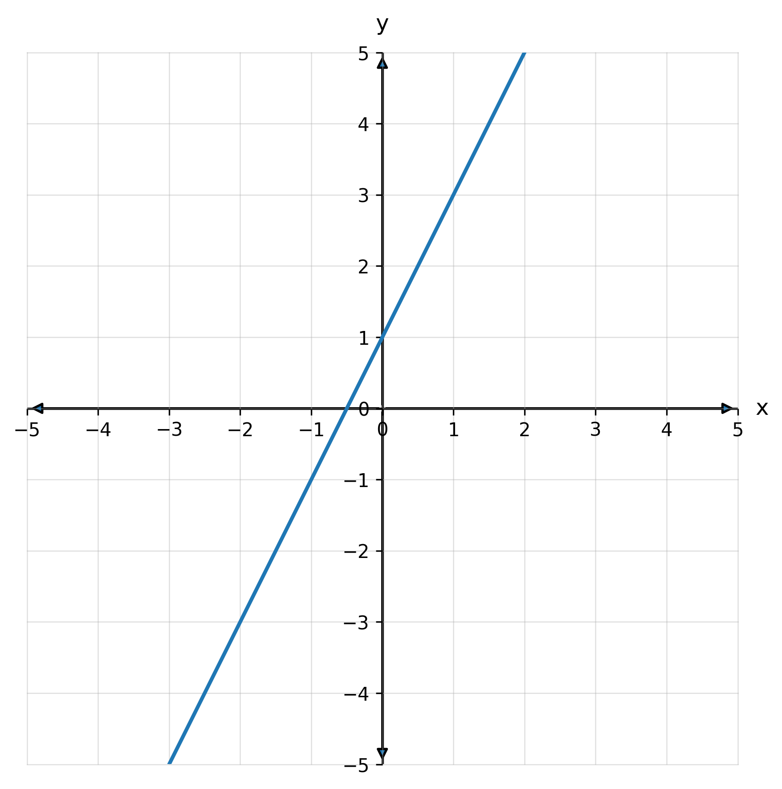
The line crosses the y-axis at \((0, 1)\) so \(b=1\).
Now pick two clear points on the line to find the slope.
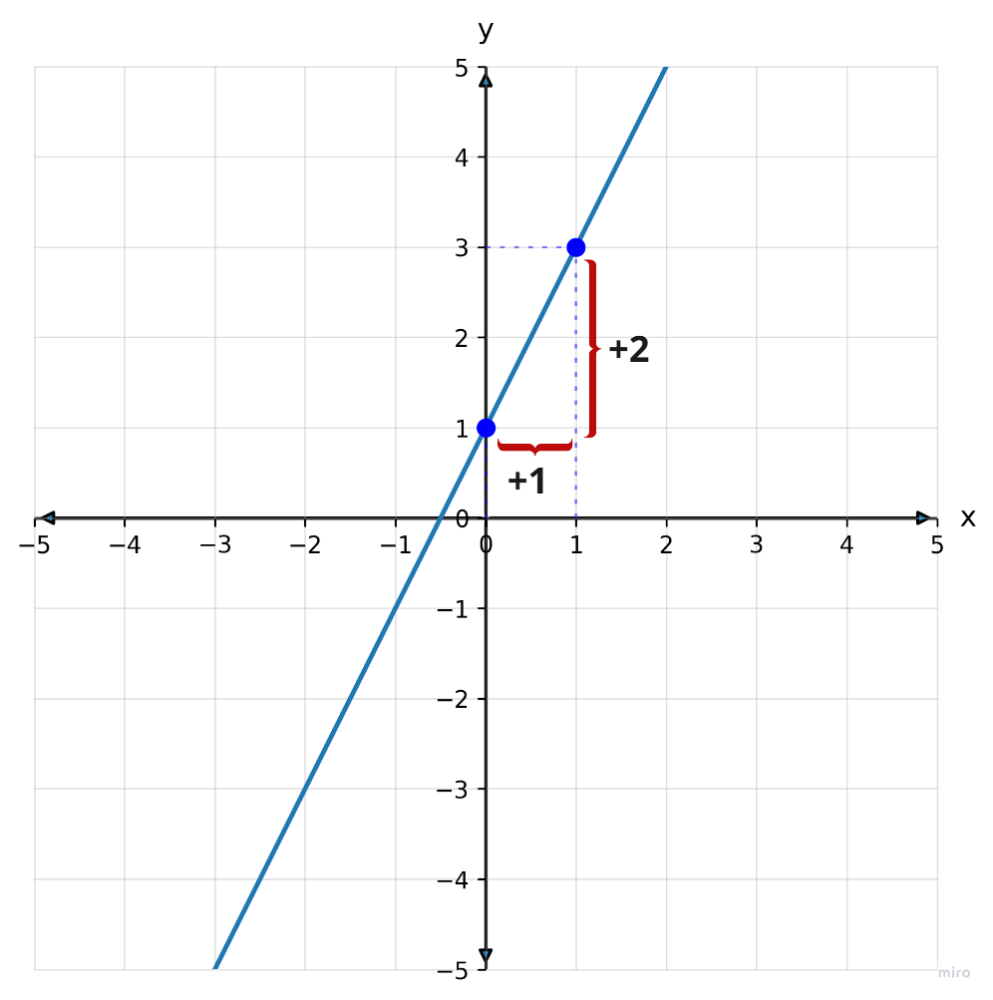
Picking the points \((0, 1)\) and \((1, 3)\) we see that \(m=2\).
Now we just replace \(m\) and \(b\) in \(y=mx+b\).
\[ y = 2x + 1 \]
Example 4:
Find the equation of the line from the graph.
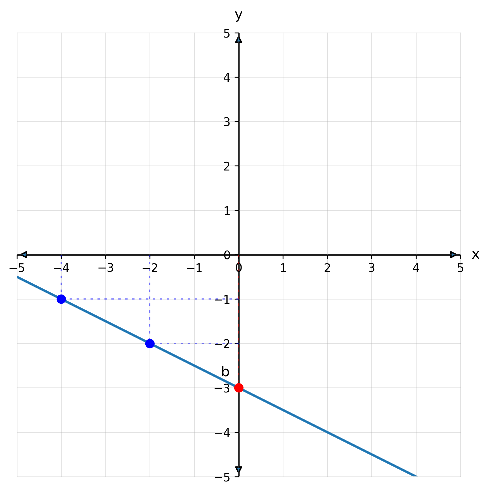
The y-intercept \(b=-3\) and the slope \(m = -\tfrac{1}{2}\).
The equation of the line is:
\[ y = -\tfrac{1}{2}x - 3 \]
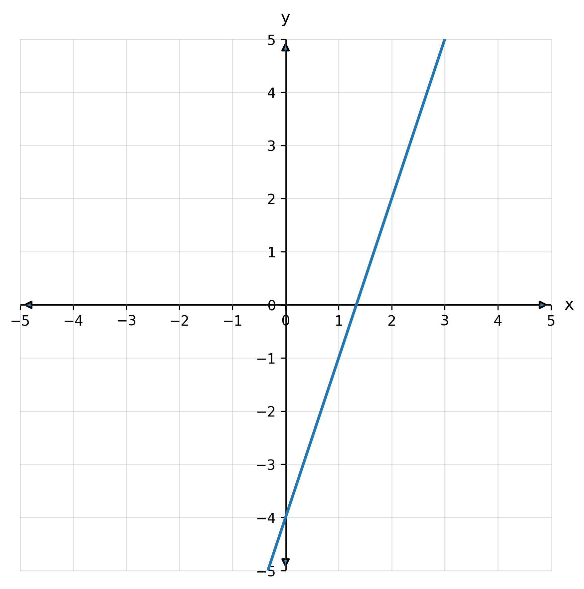
\[ y = 3x - 4 \]
4.4.3 – Slope and a Point Are Known
Sometimes you know the slope of a line and just one point it passes through — but not the y-intercept. That’s okay! You can still find the full equation by plugging the point into the rule for a line and solving for \(b\).
Remember, every line follows:
\[ y = mx + b \]
You already know \(m\) and, since you have a point, you have \(x\) and \(y\). Use those values to find \(b\), then substitute it back into the equation.
Steps:
- Start with \(y = mx + b\).
- Substitute the slope and the coordinates of the known point.
- Solve for \(b\).
- Write the final equation using your values of \(m\) and \(b\).
Example 5:
Find the equation of a line with slope \(m = 3\) that passes through the point \((2, 5)\).
Start with \(y = mx + b\) and plug in \(x = \textcolor{green}{2}\), \(y = \textcolor{red}{5}\), and \(m = \textcolor{blue}{3}\):
\[ \begin{aligned} \textcolor{red}{5} &= \textcolor{blue}{3}(\textcolor{green}{2}) + b \\ 5 &= 6 + b \\ b &= -1 \end{aligned} \]
Now substitute \(m = 3\) and \(b = -1\) into \(y = mx + b\):
\[ y = 3x - 1 \]
Example 6:
Find the equation of a line with slope \(m = \textcolor{blue}{-2}\) that passes through the point \((\textcolor{green}{1}, \textcolor{red}{4})\).
\[ \begin{aligned} \textcolor{red}{4} &= \textcolor{blue}{-2}(\textcolor{green}{1}) + b \\ 4 &= -2 + b \\ b &= 6 \end{aligned} \]
So the equation is:
\[ y = -2x + 6 \]
\[ y = \tfrac{1}{2}x + 1 \]
If you prefer to memorize formulas, you can also solve problems like this using the point-slope form of a line.
\[ y - y_1 = m(x - x_1) \]
Using point-slope form the line in Example 6 with slope \(m=-2\) and point \((1, 4)\):
We know \(m = \textcolor{blue}{-2}\), \(y_1 = \textcolor{red}{4}\) and \(x_1 = \textcolor{green}{1}\) so the equation is:
\[ y - \textcolor{red}{4} = \textcolor{blue}{-2}(x - \textcolor{green}{1}) \]
In slope-intercept form that is:
\[ \begin{align*} y - 4 &= \textcolor{red}{-2}(x - 1) \stepnote{Distribute the -2}\\ y - 4 &= -2x + 2 \\ \\ y - 4 \textcolor{red}{+4} &= -2x + 2 \textcolor{red}{+4} \snplus{4} \\ y &= -2x + 6 \end{align*} \]
4.4.4 – Two Points Are Known
Sometimes you don’t know the slope or the intercept — just two points the line passes through. That’s all you need! You can find the slope from the two points, then use what you learned in the last section to find \(b\) and write the full equation.
Every line still follows:
\[ y = mx + b \]
But this time, we’ll start by finding \(m\) using the slope formula.
Steps:
- Label your two points \((x_1, y_1)\) and \((x_2, y_2)\).
- Find the slope: \[ m = \frac{y_2 - y_1}{x_2 - x_1} \]
- Pick one of the points and substitute it into \(y = mx + b\).
- Solve for \(b\).
- Write the final equation using your values of \(m\) and \(b\).
Example 7:
Find the equation of the line passing through \((1, 2)\) and \((4, 5)\).
First, find the slope:
\[ m = \frac{5 - 2}{4 - 1} = \frac{3}{3} = 1 \]
Now use \(m = \textcolor{blue}{1}\) and one of the points — let’s use \((\textcolor{green}{1}, \textcolor{red}{2})\) — to find \(b\):
\[ \begin{aligned} \textcolor{red}{2} &= \textcolor{blue}{1}(\textcolor{green}{1}) + b \\ 2 &= 1 + b \\ b &= 1 \end{aligned} \]
So the equation of the line is:
\[ y = x + 1 \]
You can use either of the two points when solving for \(b\). If your slope is correct, both points will fit the same equation. Try plugging in the second point to check your answer!
Example 8:
Find the equation of the line passing through \((-2, 3)\) and \((2, -1)\).
Start with the slope:
\[ m = \frac{-1 - 3}{2 - (-2)} = \frac{-4}{4} = -1 \]
Now substitute \(m = \textcolor{blue}{-1}\) and the point \((\textcolor{green}{-2}, \textcolor{red}{3})\) into \(y = mx + b\):
\[ \begin{aligned} \textcolor{red}{3} &= \textcolor{blue}{-1}(\textcolor{green}{-2}) + b \\ 3 &= 2 + b \\ b &= 1 \end{aligned} \]
So the equation is:
\[ y = -x + 1 \]
\[ y = 2x - 2 \]
4.4.5 – Parallel and Perpendicular Lines (Optional)
Sometimes you’re asked to write the equation of a line that’s parallel or perpendicular to another line and passes through a given point. The process is nearly the same as before — the only difference is how you find the slope.
Parallel lines have the same slope.
Perpendicular lines have opposite reciprocal slopes
\[m_\perp=-\tfrac{1}{m}\]
Steps:
- Identify the slope of the given line.
- Use the same slope if the new line is parallel, or take the opposite reciprocal if it’s perpendicular.
- Substitute the slope and your point into \(y = mx + b\).
- Solve for \(b\) and write the final equation.
Example 9 – Parallel Lines
Find the equation of the line parallel to \(y = 3x - 4\) that passes through \((2, 1)\).
The slope of the given line is \(m = 3\). Parallel lines have the same slope, so \(m = \textcolor{blue}{3}\).
Plug the point \((\textcolor{green}{2}, \textcolor{red}{1})\) into \(y = mx + b\):
\[ \begin{aligned} \textcolor{red}{1} &= \textcolor{blue}{3}(\textcolor{green}{2}) + b \\ 1 &= 6 + b \\ b &= -5 \end{aligned} \]
The equation of the new line is:
\[ y = 3x - 5 \]
Here is a graph showing the two lines:
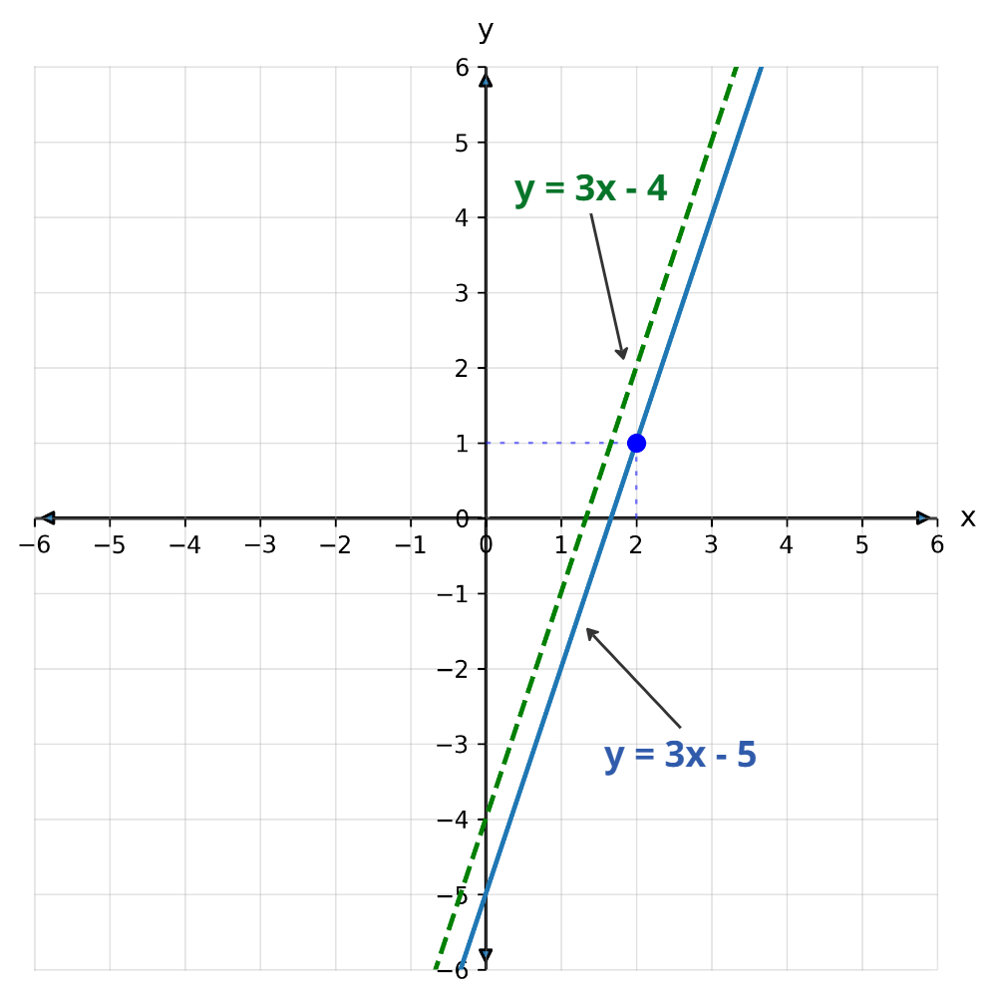
Example 10 – Perpendicular Lines
Find the equation of the line perpendicular to \(y = -\tfrac{1}{2}x + 3\) that passes through \((4, 2)\).
The given slope is \(m = -\tfrac{1}{2}\). A perpendicular line has the opposite reciprocal slope, so \(m_\perp = \textcolor{blue}{2}\).
Substitute \((\textcolor{green}{4}, \textcolor{red}{2})\) into \(y = mx + b\):
\[ \begin{aligned} \textcolor{red}{2} &= \textcolor{blue}{2}(\textcolor{green}{4}) + b \\ 2 &= 8 + b \\ b &= -6 \end{aligned} \]
The equation of the perpendicular line is:
\[ y = 2x - 6 \]
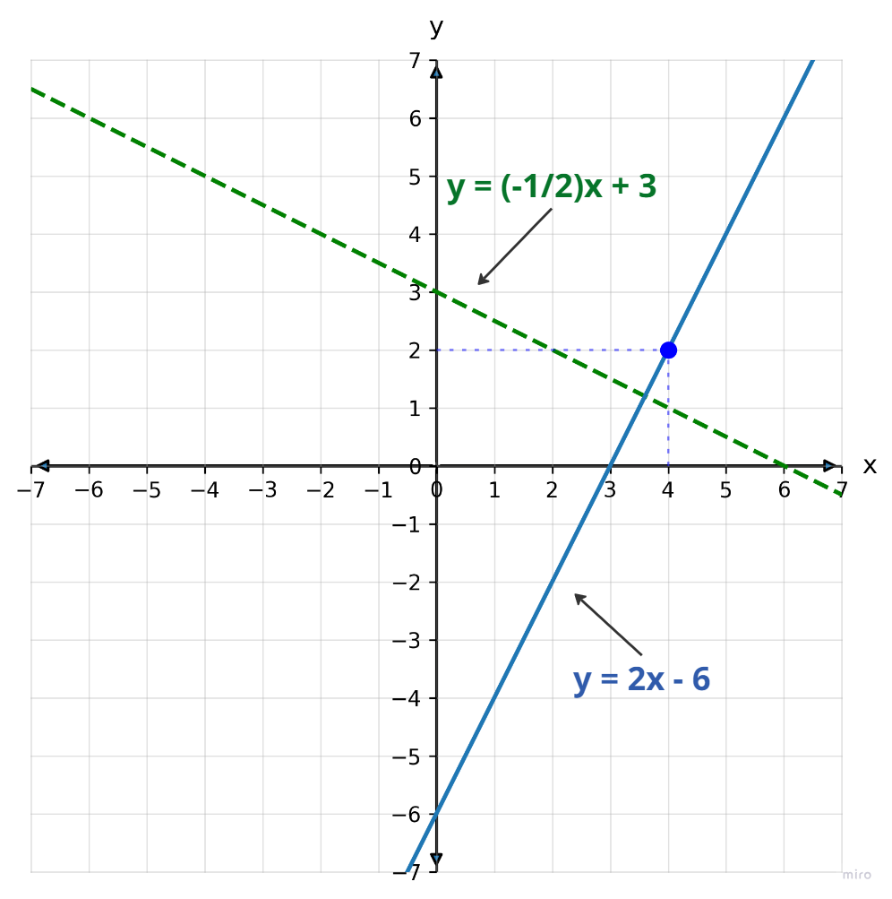
- Find the equation of the line parallel to \(y = -2x + 5\) that passes through \((0, -3)\).
- Find the equation of the line perpendicular to \(y = \tfrac{1}{3}x - 1\) that passes through \((3, 4)\).
- \(y = -2x - 3\)
- \(y = -3x + 13\)
✍️ Practice On Your Own
Slope & Intercept Known
Write the equation for each line.
\(m=3\), \(b=-1\)
\(m=-2\), \(b=4\)
\(m=\tfrac{1}{2}\), \(b=0\)
\(m=-\tfrac{3}{4}\), \(b=5\)
\(m=0\), \(b=-6\)
From a Graph
A line crosses the y-axis at \(1\) and the x-axis at \(-2\). Find its slope and equation.
Write the equation for each line.
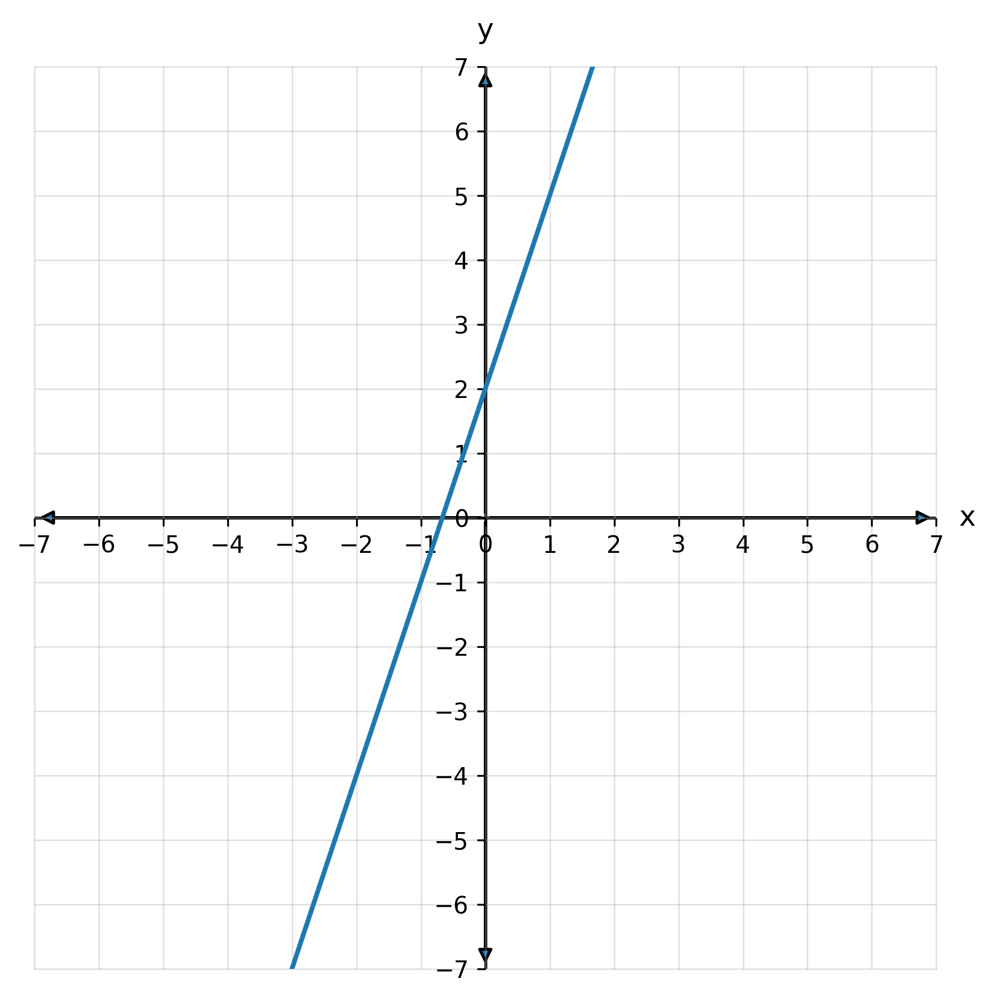
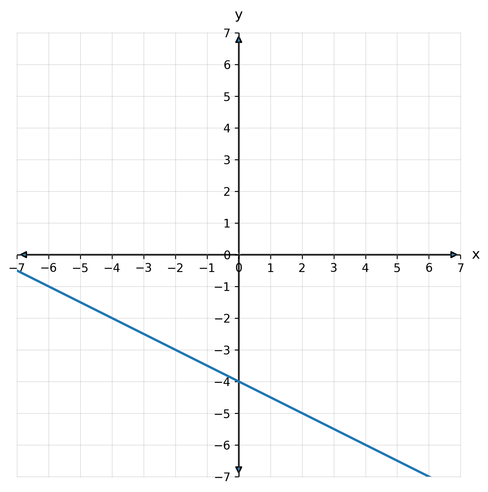
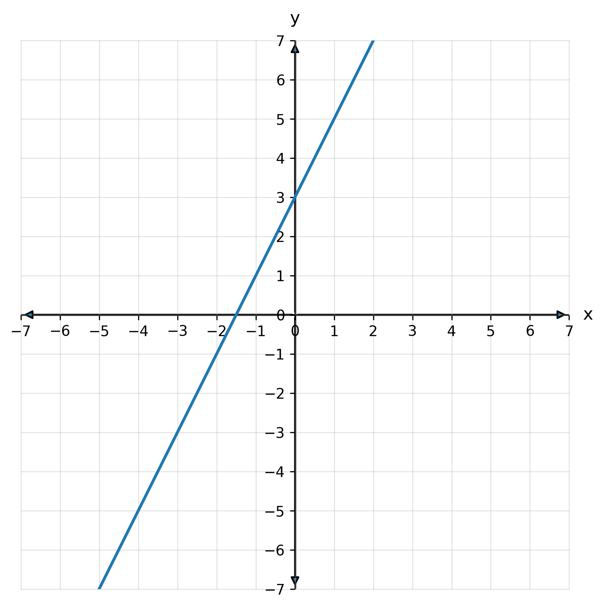
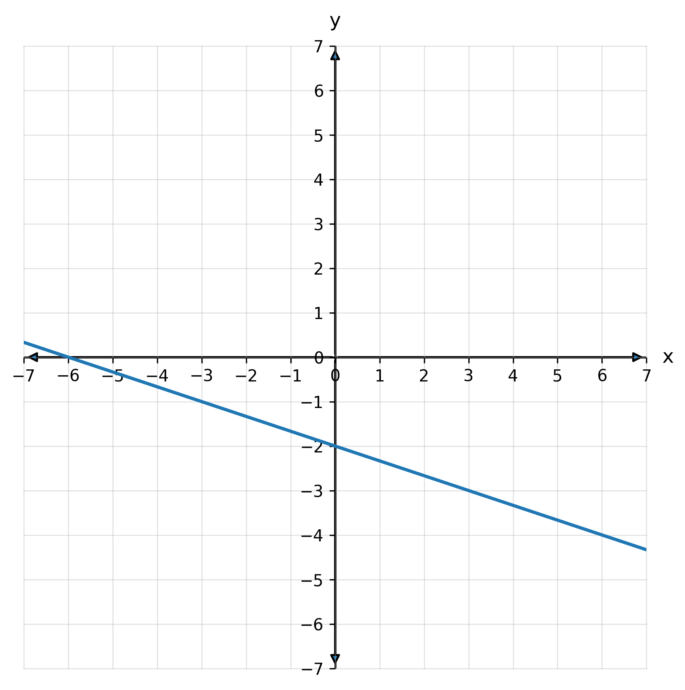
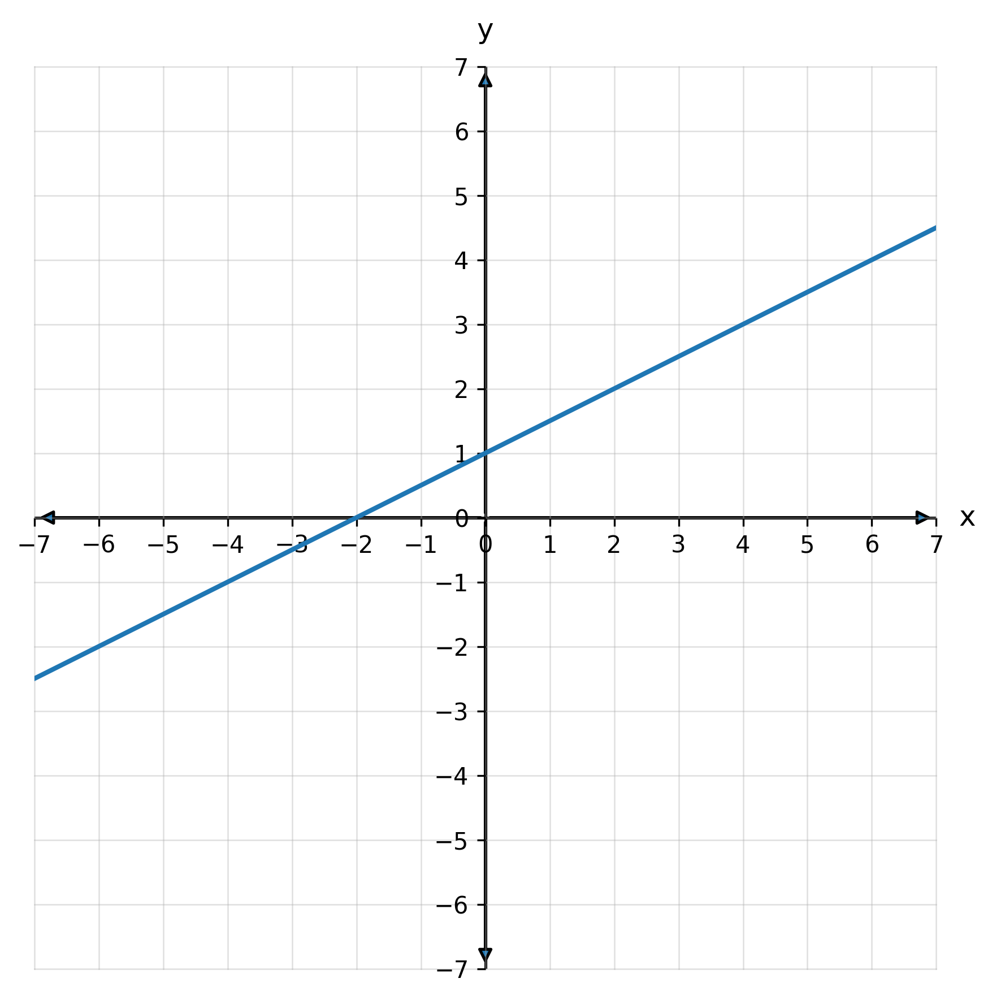
From Points
Write the equation for each line.
Through \((1,3)\) and \((5,7)\)
Through \((-2,3)\) and \((2,-1)\)
Through \((3,-1)\) and \((7,5)\)
Through \((0,-3)\) and \((6,9)\)
Through \((5,2)\) and \((1,-2)\)
Through \((0,4)\) and \((4,0)\)
Through \((-3,6)\) and \((0,-3)\)
Through \((1,1)\) and \((3,5)\)
Through \((0,-2)\) and \((4,-2)\)
Through \((10,0)\) and \((0,5)\)
Parallel & Perpendicular Lines
Write the equation for each line.
Line parallel to \(y=2x+1\) through \((0,-3)\)
Line perpendicular to \(y=-\tfrac{1}{2}x+5\) through \((4,2)\)
Line parallel to \(y=x-4\) through \((0,6)\)
Line perpendicular to \(y=\tfrac{1}{3}x+2\) through \((3,1)\)
Line parallel to \(3x+2y=6\) through \((2,-1)\) (Hint: solve for \(y\) first)
Challenge Problems
Find the equation for the line passing through the point \((x_1, y_1)\) and \((x_2, y_2)\). What is the y-intercept?
Find the point where \(y = -\tfrac{1}{3}x - 4\) intersects with the perpendicular line containing the point \((5, -3)\).
\(y=3x-1\)
\(y=-2x+4\)
\(y=\tfrac{1}{2}x\)
\(y=-\tfrac{3}{4}x+5\)
\(y=-6\)
\(y=3x+2\)
\(y=-\tfrac{1}{2}x-4\)
\(y=2x+3\)
\(y=-\tfrac{1}{3}x-2\)
\(y=\tfrac{1}{2}x+1\)
\(y=x+2\)
\(y=-x+1\)
\(y=\tfrac{3}{2}x-\tfrac{11}{2}\)
\(y=2x-3\)
\(y=x-3\)
\(y=-x+4\)
\(y=-3x-3\)
\(y=2x-1\)
\(y=-2\)
\(y=-\tfrac{1}{2}x+5\)
\(y=2x-3\)
\(y=2x-6\)
\(y=x+6\)
\(y=-3x+10\)
\(y=-\tfrac{3}{2}x+2\)